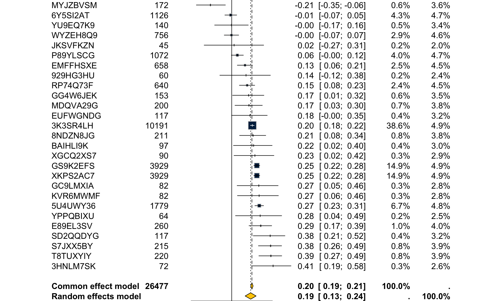
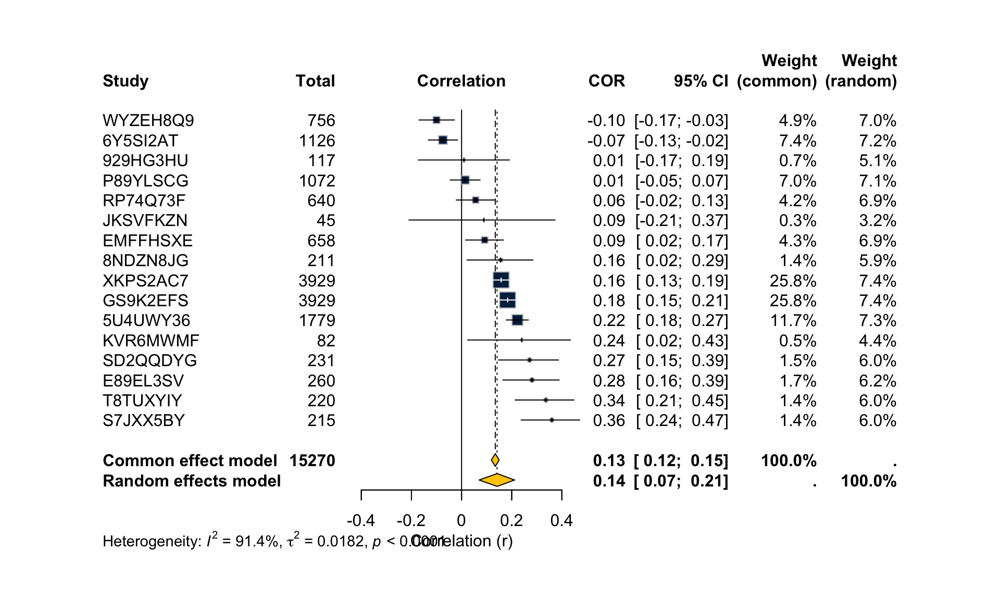
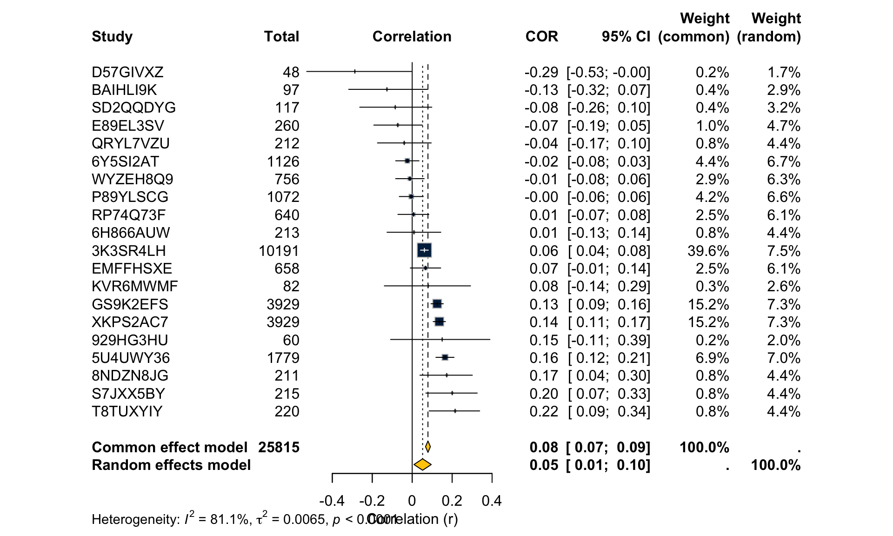
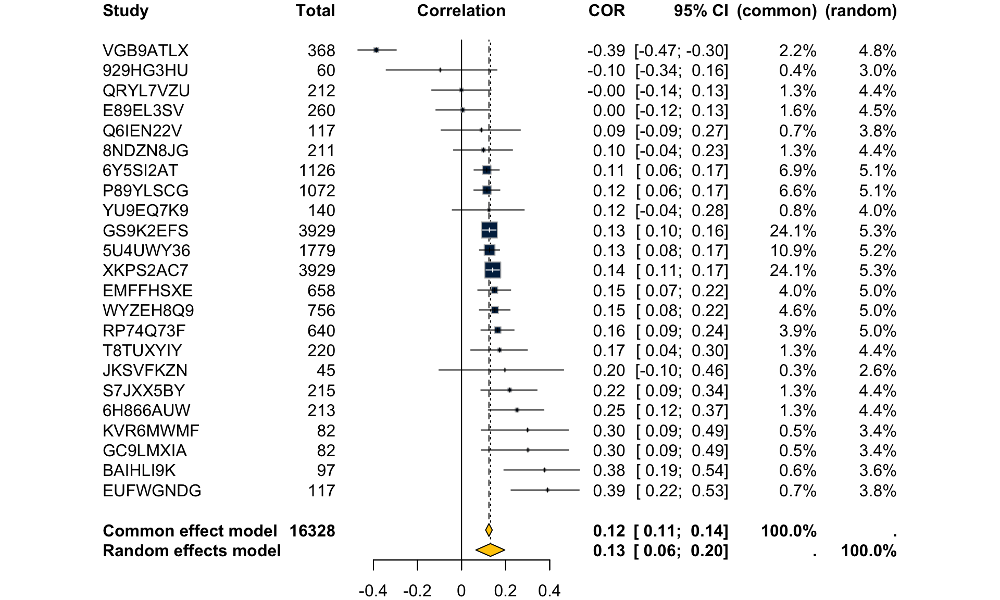
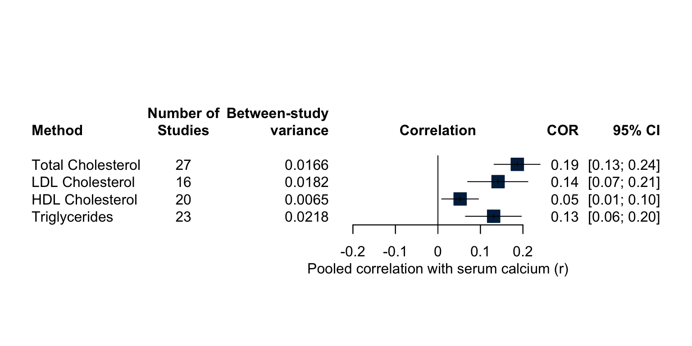
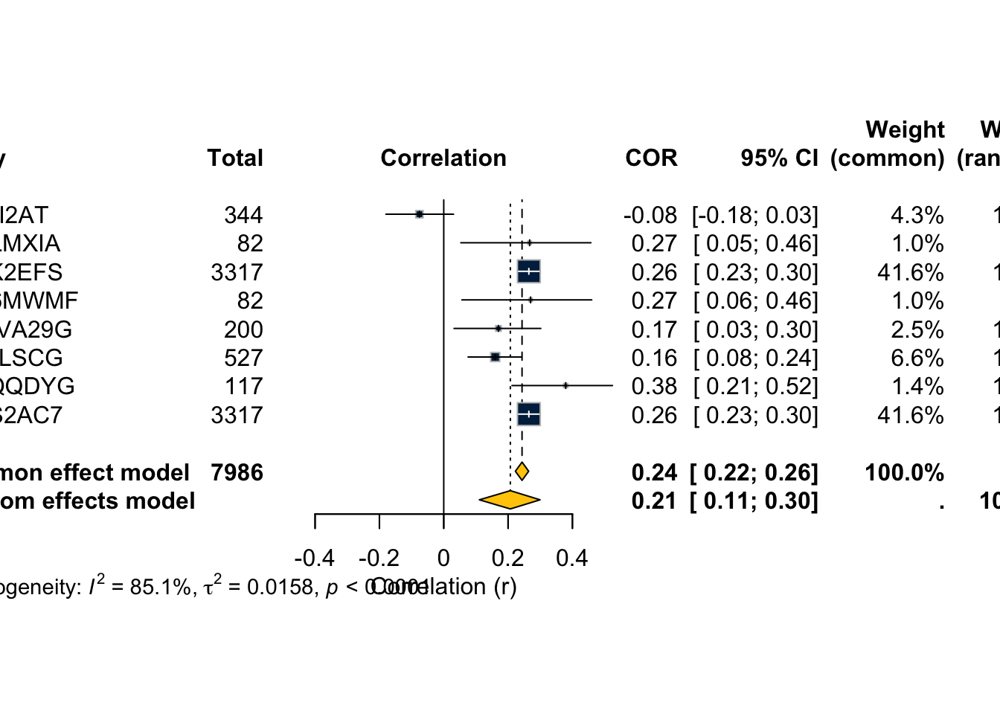
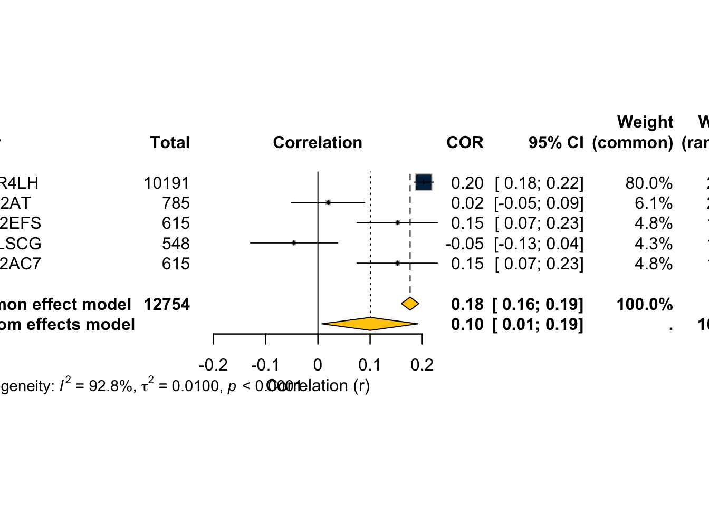

Show the code
corr.raw <- read_csv(
"Screening Log for Calcium and Cholesterol Meta-Analysis - Correlations.csv",
show_col_types = FALSE
)Pre-registered meta-analysis (PROSPERO CRD420250645066) of cross-sectional associations between serum calcium and serum cholesterol. Correlation coefficients are Fisher-z transformed for pooling and back-transformed for presentation, as specified in the registration. Separate meta-analyses are run for each lipid outcome (Total Cholesterol primary; LDL, HDL, Triglycerides secondary). Primary calcium exposure is serum calcium; corrected calcium is a sensitivity analysis. When a paper reports only sex- or disease-stratified estimates (no combined figure), stratum estimates are pooled within-study via a Fisher-z weighted average before entering the between-study meta-analysis, giving one effect per study.
corr.raw <- read_csv(
"Screening Log for Calcium and Cholesterol Meta-Analysis - Correlations.csv",
show_col_types = FALSE
)# ── helper: fix non-standard minus signs and stray characters in r ──────────
clean_r <- function(x) {
x |>
str_replace_all("[−–—]", "-") |> # em/en-dash → minus
str_replace_all("\\.{2,}", ".") |> # double decimals
str_replace_all("[^0-9\\.\\-]", "") |> # anything else
as.numeric()
}
# ── parse calcium type and lipid outcome from Association column ─────────────
corr <- corr.raw |>
mutate(
# fix OCR/typo variants before splitting
assoc_clean = Association |>
str_replace_all("Correctect", "Corrected") |>
str_replace_all("Cholestrol|Choelstrol", "Cholesterol") |>
str_replace_all("Triglycerdies", "Triglycerides") |>
str_squish(),
adjusted = str_detect(assoc_clean, "\\(adjusted\\)"),
# everything left of " - "
calcium_raw = str_extract(assoc_clean, "^.+?(?= - )") |> str_trim(),
# everything right of the first " - ", strip "(adjusted)"
lipid_raw = str_extract(assoc_clean, "(?<= - ).+$") |>
str_remove("\\s*\\(adjusted\\)") |>
str_trim(),
calcium_type = case_when(
str_detect(calcium_raw, "^Serum Calcium$") ~ "Serum",
str_detect(calcium_raw, "Corrected Calcium") ~ "Corrected",
str_detect(calcium_raw, "Ionic Calcium") ~ "Ionic",
str_detect(calcium_raw, "Hair Calcium") ~ "Hair",
str_detect(calcium_raw, "Calcium Intake") ~ "Intake",
str_detect(calcium_raw, "Change in Serum Calcium") ~ "Change",
TRUE ~ "Other"
),
lipid_type = case_when(
str_detect(lipid_raw, "Total Cholesterol") ~ "Total Cholesterol",
str_detect(lipid_raw, "LDL Cholesterol") ~ "LDL Cholesterol",
str_detect(lipid_raw, "HDL Cholesterol") ~ "HDL Cholesterol",
str_detect(lipid_raw, "Triglycerides") ~ "Triglycerides",
TRUE ~ "Other"
),
r_clean = clean_r(as.character(r)),
n = as.integer(n)
) |>
filter(!is.na(r_clean), !is.na(n), abs(r_clean) < 1)corr |>
count(calcium_type, lipid_type, adjusted) |>
kable(caption = "Observations by calcium type, lipid outcome, and adjustment status")| calcium_type | lipid_type | adjusted | n |
|---|---|---|---|
| Change | Total Cholesterol | FALSE | 1 |
| Corrected | HDL Cholesterol | FALSE | 15 |
| Corrected | HDL Cholesterol | TRUE | 2 |
| Corrected | LDL Cholesterol | FALSE | 7 |
| Corrected | LDL Cholesterol | TRUE | 2 |
| Corrected | Total Cholesterol | FALSE | 15 |
| Corrected | Total Cholesterol | TRUE | 2 |
| Corrected | Triglycerides | FALSE | 14 |
| Corrected | Triglycerides | TRUE | 2 |
| Hair | HDL Cholesterol | FALSE | 1 |
| Hair | LDL Cholesterol | FALSE | 1 |
| Hair | Total Cholesterol | FALSE | 1 |
| Hair | Triglycerides | FALSE | 1 |
| Intake | HDL Cholesterol | FALSE | 1 |
| Intake | LDL Cholesterol | FALSE | 1 |
| Intake | Total Cholesterol | FALSE | 1 |
| Intake | Triglycerides | FALSE | 1 |
| Ionic | Other | FALSE | 3 |
| Ionic | Total Cholesterol | FALSE | 3 |
| Serum | HDL Cholesterol | FALSE | 41 |
| Serum | HDL Cholesterol | TRUE | 2 |
| Serum | LDL Cholesterol | FALSE | 39 |
| Serum | LDL Cholesterol | TRUE | 2 |
| Serum | Other | FALSE | 12 |
| Serum | Total Cholesterol | FALSE | 56 |
| Serum | Total Cholesterol | TRUE | 2 |
| Serum | Triglycerides | FALSE | 48 |
| Serum | Triglycerides | TRUE | 2 |
When a paper supplies only stratum-specific estimates (e.g. males and females separately), a single study-level estimate is computed via Fisher-z weighted average before the between-study meta-analysis.
# Fisher-z weighted mean within study × calcium_type × lipid_type × adjusted
pool_within_study <- function(r_vec, n_vec) {
# variance of Fisher z is 1/(n-3); weight = n-3
w <- n_vec - 3
z <- atanh(r_vec)
z_p <- sum(z * w) / sum(w)
n_p <- sum(w) + 3L # effective n preserving total precision
list(r_pooled = tanh(z_p), n_pooled = as.integer(round(n_p)))
}
corr.study <- corr |>
group_by(StudyID, calcium_type, lipid_type, adjusted) |>
summarise(
pool_within_study(r_clean, n) |> as_tibble(),
k_strata = n(),
.groups = "drop"
)
corr.study |>
filter(calcium_type == "Serum", !adjusted, lipid_type != "Other") |>
count(lipid_type) |>
kable(caption = "Studies contributing to each primary serum-calcium analysis")| lipid_type | n |
|---|---|
| HDL Cholesterol | 20 |
| LDL Cholesterol | 16 |
| Total Cholesterol | 27 |
| Triglycerides | 23 |
run_metacor <- function(data, calcium, lipid, adj = FALSE,
label = NULL) {
d <- data |>
filter(
calcium_type == calcium,
lipid_type == lipid,
adjusted == adj
)
if (nrow(d) < 2) {
message("Fewer than 2 studies for ", calcium, " – ", lipid,
" (adjusted=", adj, "); skipping.")
return(invisible(NULL))
}
title_str <- label %||%
paste0(calcium, " Calcium vs ", lipid, if (adj) " (adjusted)")
metacor(
cor = r_pooled,
n = n_pooled,
studlab = StudyID,
data = d,
common = TRUE,
random = TRUE,
method.tau = "REML",
title = title_str
)
}ma.tc <- run_metacor(corr.study, "Serum", "Total Cholesterol")
summary(ma.tc)Review: Serum Calcium vs Total Cholesterol
COR 95% CI %W(common) %W(random)
3HNLM7SK 0.4076 [ 0.1943; 0.5841] 0.3 2.6
3K3SR4LH 0.2028 [ 0.1841; 0.2214] 38.6 4.9
5U4UWY36 0.2717 [ 0.2281; 0.3142] 6.7 4.8
6Y5SI2AT -0.0092 [-0.0676; 0.0492] 4.3 4.7
8NDZN8JG 0.2100 [ 0.0771; 0.3356] 0.8 3.8
929HG3HU 0.1410 [-0.1171; 0.3813] 0.2 2.4
BAIHLI9K 0.2159 [ 0.0172; 0.3982] 0.4 3.0
E89EL3SV 0.2860 [ 0.1703; 0.3939] 1.0 4.0
EMFFHSXE 0.1310 [ 0.0551; 0.2054] 2.5 4.5
EUFWGNDG 0.1800 [-0.0016; 0.3501] 0.4 3.2
GC9LMXIA 0.2670 [ 0.0531; 0.4575] 0.3 2.8
GG4W6JEK 0.1670 [ 0.0085; 0.3173] 0.6 3.5
GS9K2EFS 0.2475 [ 0.2179; 0.2766] 14.9 4.9
JKSVFKZN 0.0236 [-0.2718; 0.3150] 0.2 2.0
KVR6MWMF 0.2700 [ 0.0563; 0.4601] 0.3 2.8
MDQVA29G 0.1700 [ 0.0320; 0.3016] 0.7 3.8
MYJZBVSM -0.2098 [-0.3485; -0.0621] 0.6 3.6
P89YLSCG 0.0556 [-0.0043; 0.1151] 4.0 4.7
RP74Q73F 0.1520 [ 0.0754; 0.2268] 2.4 4.5
S7JXX5BY 0.3832 [ 0.2629; 0.4918] 0.8 3.9
SD2QQDYG 0.3791 [ 0.2122; 0.5245] 0.4 3.2
T8TUXYIY 0.3860 [ 0.2674; 0.4931] 0.8 3.9
WYZEH8Q9 -0.0025 [-0.0738; 0.0689] 2.9 4.6
XGCQ2XS7 0.2285 [ 0.0225; 0.4159] 0.3 2.9
XKPS2AC7 0.2475 [ 0.2179; 0.2766] 14.9 4.9
YPPQBIXU 0.2805 [ 0.0372; 0.4923] 0.2 2.5
YU9EQ7K9 -0.0027 [-0.1685; 0.1633] 0.5 3.4
Number of studies: k = 27
Number of observations: o = 26477
COR 95% CI z p-value
Common effect model 0.1992 [0.1876; 0.2108] 32.81 < 0.0001
Random effects model 0.1868 [0.1321; 0.2404] 6.60 < 0.0001
Quantifying heterogeneity (with 95% CIs):
tau^2 = 0.0166 [0.0082; 0.0354]; tau = 0.1288 [0.0908; 0.1881]
I^2 = 87.4% [82.8%; 90.7%]; H = 2.82 [2.41; 3.29]
Test of heterogeneity:
Q d.f. p-value
206.33 26 < 0.0001
Details of meta-analysis methods:
- Inverse variance method
- Restricted maximum-likelihood estimator for tau^2
- Q-Profile method for confidence interval of tau^2 and tau
- Calculation of I^2 based on Q
- Fisher's z transformation of correlationsforest(ma.tc,
sortvar = r_pooled,
col.square = color_scheme[1],
col.diamond = color_scheme[2],
xlab = "Correlation (r)",
main = "Serum Calcium vs Total Cholesterol")
ma.ldl <- run_metacor(corr.study, "Serum", "LDL Cholesterol")
summary(ma.ldl)Review: Serum Calcium vs LDL Cholesterol
COR 95% CI %W(common) %W(random)
5U4UWY36 0.2229 [ 0.1782; 0.2666] 11.7 7.3
6Y5SI2AT -0.0744 [-0.1323; -0.0161] 7.4 7.2
8NDZN8JG 0.1560 [ 0.0214; 0.2851] 1.4 5.9
929HG3HU 0.0096 [-0.1722; 0.1908] 0.7 5.1
E89EL3SV 0.2810 [ 0.1650; 0.3893] 1.7 6.2
EMFFHSXE 0.0920 [ 0.0157; 0.1673] 4.3 6.9
GS9K2EFS 0.1835 [ 0.1532; 0.2136] 25.8 7.4
JKSVFKZN 0.0890 [-0.2100; 0.3728] 0.3 3.2
KVR6MWMF 0.2400 [ 0.0243; 0.4344] 0.5 4.4
P89YLSCG 0.0142 [-0.0457; 0.0740] 7.0 7.1
RP74Q73F 0.0560 [-0.0216; 0.1329] 4.2 6.9
S7JXX5BY 0.3600 [ 0.2376; 0.4711] 1.4 6.0
SD2QQDYG 0.2712 [ 0.1473; 0.3867] 1.5 6.0
T8TUXYIY 0.3360 [ 0.2132; 0.4483] 1.4 6.0
WYZEH8Q9 -0.1000 [-0.1701; -0.0289] 4.9 7.0
XKPS2AC7 0.1577 [ 0.1271; 0.1880] 25.8 7.4
Number of studies: k = 16
Number of observations: o = 15270
COR 95% CI z p-value
Common effect model 0.1344 [0.1188; 0.1499] 16.68 < 0.0001
Random effects model 0.1415 [0.0700; 0.2116] 3.86 0.0001
Quantifying heterogeneity (with 95% CIs):
tau^2 = 0.0182 [0.0083; 0.0461]; tau = 0.1349 [0.0910; 0.2148]
I^2 = 91.4% [87.7%; 94.0%]; H = 3.42 [2.85; 4.09]
Test of heterogeneity:
Q d.f. p-value
175.14 15 < 0.0001
Details of meta-analysis methods:
- Inverse variance method
- Restricted maximum-likelihood estimator for tau^2
- Q-Profile method for confidence interval of tau^2 and tau
- Calculation of I^2 based on Q
- Fisher's z transformation of correlationsforest(ma.ldl,
sortvar = r_pooled,
col.square = color_scheme[1],
col.diamond = color_scheme[2],
xlab = "Correlation (r)",
main = "Serum Calcium vs LDL Cholesterol")
ma.hdl <- run_metacor(corr.study, "Serum", "HDL Cholesterol")
summary(ma.hdl)Review: Serum Calcium vs HDL Cholesterol
COR 95% CI %W(common) %W(random)
3K3SR4LH 0.0612 [ 0.0418; 0.0805] 39.6 7.5
5U4UWY36 0.1644 [ 0.1189; 0.2093] 6.9 7.0
6H866AUW 0.0089 [-0.1257; 0.1432] 0.8 4.4
6Y5SI2AT -0.0243 [-0.0826; 0.0342] 4.4 6.7
8NDZN8JG 0.1730 [ 0.0388; 0.3010] 0.8 4.4
929HG3HU 0.1500 [-0.1080; 0.3891] 0.2 2.0
BAIHLI9K -0.1264 [-0.3178; 0.0749] 0.4 2.9
D57GIVXZ -0.2870 [-0.5281; -0.0031] 0.2 1.7
E89EL3SV -0.0720 [-0.1920; 0.0501] 1.0 4.7
EMFFHSXE 0.0670 [-0.0095; 0.1427] 2.5 6.1
GS9K2EFS 0.1251 [ 0.0942; 0.1557] 15.2 7.3
KVR6MWMF 0.0800 [-0.1394; 0.2919] 0.3 2.6
P89YLSCG -0.0047 [-0.0646; 0.0552] 4.2 6.6
QRYL7VZU -0.0400 [-0.1738; 0.0953] 0.8 4.4
RP74Q73F 0.0060 [-0.0715; 0.0835] 2.5 6.1
S7JXX5BY 0.2004 [ 0.0684; 0.3255] 0.8 4.4
SD2QQDYG -0.0850 [-0.2625; 0.0981] 0.4 3.2
T8TUXYIY 0.2150 [ 0.0852; 0.3377] 0.8 4.4
WYZEH8Q9 -0.0115 [-0.0827; 0.0599] 2.9 6.3
XKPS2AC7 0.1359 [ 0.1050; 0.1664] 15.2 7.3
Number of studies: k = 20
Number of observations: o = 25815
COR 95% CI z p-value
Common effect model 0.0790 [0.0668; 0.0911] 12.70 < 0.0001
Random effects model 0.0523 [0.0089; 0.0954] 2.36 0.0182
Quantifying heterogeneity (with 95% CIs):
tau^2 = 0.0065 [0.0029; 0.0250]; tau = 0.0804 [0.0542; 0.1582]
I^2 = 81.1% [71.6%; 87.3%]; H = 2.30 [1.88; 2.81]
Test of heterogeneity:
Q d.f. p-value
100.31 19 < 0.0001
Details of meta-analysis methods:
- Inverse variance method
- Restricted maximum-likelihood estimator for tau^2
- Q-Profile method for confidence interval of tau^2 and tau
- Calculation of I^2 based on Q
- Fisher's z transformation of correlationsforest(ma.hdl,
sortvar = r_pooled,
col.square = color_scheme[1],
col.diamond = color_scheme[2],
xlab = "Correlation (r)",
main = "Serum Calcium vs HDL Cholesterol")
ma.tg <- run_metacor(corr.study, "Serum", "Triglycerides")
summary(ma.tg)Review: Serum Calcium vs Triglycerides
COR 95% CI %W(common) %W(random)
5U4UWY36 0.1271 [ 0.0811; 0.1726] 10.9 5.2
6H866AUW 0.2516 [ 0.1213; 0.3734] 1.3 4.4
6Y5SI2AT 0.1142 [ 0.0561; 0.1715] 6.9 5.1
8NDZN8JG 0.0990 [-0.0366; 0.2310] 1.3 4.4
929HG3HU -0.0970 [-0.3425; 0.1609] 0.4 3.0
BAIHLI9K 0.3768 [ 0.1917; 0.5359] 0.6 3.6
E89EL3SV 0.0050 [-0.1167; 0.1266] 1.6 4.5
EMFFHSXE 0.1490 [ 0.0734; 0.2229] 4.0 5.0
EUFWGNDG 0.3900 [ 0.2244; 0.5337] 0.7 3.8
GC9LMXIA 0.3010 [ 0.0899; 0.4862] 0.5 3.4
GS9K2EFS 0.1261 [ 0.0952; 0.1567] 24.1 5.3
JKSVFKZN 0.1966 [-0.1028; 0.4634] 0.3 2.6
KVR6MWMF 0.3000 [ 0.0888; 0.4854] 0.5 3.4
P89YLSCG 0.1152 [ 0.0557; 0.1739] 6.6 5.1
Q6IEN22V 0.0898 [-0.0932; 0.2670] 0.7 3.8
QRYL7VZU -0.0010 [-0.1357; 0.1338] 1.3 4.4
RP74Q73F 0.1640 [ 0.0876; 0.2385] 3.9 5.0
S7JXX5BY 0.2188 [ 0.0876; 0.3426] 1.3 4.4
T8TUXYIY 0.1730 [ 0.0417; 0.2984] 1.3 4.4
VGB9ATLX -0.3869 [-0.4705; -0.2964] 2.2 4.8
WYZEH8Q9 0.1511 [ 0.0806; 0.2200] 4.6 5.0
XKPS2AC7 0.1415 [ 0.1107; 0.1720] 24.1 5.3
YU9EQ7K9 0.1243 [-0.0425; 0.2844] 0.8 4.0
Number of studies: k = 23
Number of observations: o = 16328
COR 95% CI z p-value
Common effect model 0.1242 [0.1090; 0.1393] 15.92 < 0.0001
Random effects model 0.1311 [0.0648; 0.1963] 3.86 0.0001
Quantifying heterogeneity (with 95% CIs):
tau^2 = 0.0218 [0.0112; 0.0504]; tau = 0.1477 [0.1058; 0.2244]
I^2 = 84.9% [78.5%; 89.4%]; H = 2.57 [2.16; 3.07]
Test of heterogeneity:
Q d.f. p-value
145.44 22 < 0.0001
Details of meta-analysis methods:
- Inverse variance method
- Restricted maximum-likelihood estimator for tau^2
- Q-Profile method for confidence interval of tau^2 and tau
- Calculation of I^2 based on Q
- Fisher's z transformation of correlationsforest(ma.tg,
sortvar = r_pooled,
col.square = color_scheme[1],
col.diamond = color_scheme[2],
xlab = "Correlation (r)",
main = "Serum Calcium vs Triglycerides")
extract_ma <- function(ma, label) {
if (is.null(ma)) return(NULL)
tibble(
Outcome = label,
k = ma$k,
r_random = tanh(ma$TE.random),
r_random_lower = tanh(ma$lower.random),
r_random_upper = tanh(ma$upper.random),
p_random = ma$pval.random,
I2 = ma$I2,
tau = sqrt(ma$tau2),
r_common = tanh(ma$TE.common),
p_common = ma$pval.common
)
}
bind_rows(
extract_ma(ma.tc, "Total Cholesterol"),
extract_ma(ma.ldl, "LDL Cholesterol"),
extract_ma(ma.hdl, "HDL Cholesterol"),
extract_ma(ma.tg, "Triglycerides")
) |>
mutate(across(where(is.numeric), \(x) round(x, 3))) |>
kable(caption = "Summary of primary meta-analyses (serum calcium, unadjusted, random-effects)")| Outcome | k | r_random | r_random_lower | r_random_upper | p_random | I2 | tau | r_common | p_common |
|---|---|---|---|---|---|---|---|---|---|
| Total Cholesterol | 27 | 0.187 | 0.132 | 0.240 | 0.000 | 0.874 | 0.129 | 0.199 | 0 |
| LDL Cholesterol | 16 | 0.142 | 0.070 | 0.212 | 0.000 | 0.914 | 0.135 | 0.134 | 0 |
| HDL Cholesterol | 20 | 0.052 | 0.009 | 0.095 | 0.018 | 0.811 | 0.080 | 0.079 | 0 |
| Triglycerides | 23 | 0.131 | 0.065 | 0.196 | 0.000 | 0.849 | 0.148 | 0.124 | 0 |
# metabind combines multiple metacor objects; plot only the pooled estimates
ma.all <- metabind(ma.tc, ma.ldl, ma.hdl, ma.tg,
pooled = "random",
name = c("Total Cholesterol", "LDL Cholesterol",
"HDL Cholesterol", "Triglycerides"))
forest(ma.all,
hetstat = FALSE,
test.overall = FALSE,
col.square = color_scheme[1],
xlab = "Pooled correlation with serum calcium (r)",
main = "Serum Calcium vs Serum Lipids")
ma.tc.corr <- run_metacor(corr.study, "Corrected", "Total Cholesterol",
label = "Corrected Ca vs Total Cholesterol")
ma.ldl.corr <- run_metacor(corr.study, "Corrected", "LDL Cholesterol",
label = "Corrected Ca vs LDL Cholesterol")
ma.hdl.corr <- run_metacor(corr.study, "Corrected", "HDL Cholesterol",
label = "Corrected Ca vs HDL Cholesterol")
ma.tg.corr <- run_metacor(corr.study, "Corrected", "Triglycerides",
label = "Corrected Ca vs Triglycerides")
bind_rows(
extract_ma(ma.tc.corr, "Total Cholesterol"),
extract_ma(ma.ldl.corr, "LDL Cholesterol"),
extract_ma(ma.hdl.corr, "HDL Cholesterol"),
extract_ma(ma.tg.corr, "Triglycerides")
) |>
mutate(across(where(is.numeric), \(x) round(x, 3))) |>
kable(caption = "Sensitivity: corrected calcium (unadjusted, random-effects)")| Outcome | k | r_random | r_random_lower | r_random_upper | p_random | I2 | tau | r_common | p_common |
|---|---|---|---|---|---|---|---|---|---|
| Total Cholesterol | 11 | 0.154 | 0.118 | 0.189 | 0.000 | 0.543 | 0.034 | 0.133 | 0.000 |
| LDL Cholesterol | 6 | 0.164 | 0.096 | 0.230 | 0.000 | 0.661 | 0.071 | 0.139 | 0.000 |
| HDL Cholesterol | 10 | 0.017 | -0.033 | 0.066 | 0.514 | 0.683 | 0.062 | 0.023 | 0.004 |
| Triglycerides | 10 | 0.109 | 0.061 | 0.157 | 0.000 | 0.659 | 0.053 | 0.090 | 0.000 |
ma.tc.adj <- run_metacor(corr.study, "Serum", "Total Cholesterol", adj = TRUE,
label = "Serum Ca vs Total Cholesterol (adjusted)")
ma.ldl.adj <- run_metacor(corr.study, "Serum", "LDL Cholesterol", adj = TRUE,
label = "Serum Ca vs LDL Cholesterol (adjusted)")
ma.hdl.adj <- run_metacor(corr.study, "Serum", "HDL Cholesterol", adj = TRUE,
label = "Serum Ca vs HDL Cholesterol (adjusted)")
ma.tg.adj <- run_metacor(corr.study, "Serum", "Triglycerides", adj = TRUE,
label = "Serum Ca vs Triglycerides (adjusted)")
bind_rows(
extract_ma(ma.tc.adj, "Total Cholesterol"),
extract_ma(ma.ldl.adj, "LDL Cholesterol"),
extract_ma(ma.hdl.adj, "HDL Cholesterol"),
extract_ma(ma.tg.adj, "Triglycerides")
) |>
mutate(across(where(is.numeric), \(x) round(x, 3))) |>
kable(caption = "Sensitivity: serum calcium, adjusted correlations (random-effects)")| Outcome | k | r_random | r_random_lower | r_random_upper | p_random | I2 | tau | r_common | p_common |
|---|---|---|---|---|---|---|---|---|---|
| Total Cholesterol | 2 | 0.343 | 0.246 | 0.433 | 0.000 | 0.204 | 0.035 | 0.343 | 0.000 |
| LDL Cholesterol | 2 | 0.340 | 0.254 | 0.421 | 0.000 | 0.000 | 0.000 | 0.340 | 0.000 |
| HDL Cholesterol | 2 | 0.171 | 0.078 | 0.261 | 0.000 | 0.000 | 0.000 | 0.171 | 0.000 |
| Triglycerides | 2 | 0.162 | 0.069 | 0.253 | 0.001 | 0.000 | 0.000 | 0.162 | 0.001 |
Pre-registered subgroups (sex, menopausal status, disease status) are available via the raw stratum data in corr. Run only when ≥ 3 studies per subgroup.
# Extract studies that reported sex-stratified data and have ≥ 3 per sex
sex_data <- corr |>
filter(
calcium_type == "Serum",
lipid_type == "Total Cholesterol",
!adjusted,
str_detect(notes, regex("^male|^female", ignore_case = TRUE))
) |>
mutate(sex = if_else(str_detect(notes, regex("^female", ignore_case = TRUE)),
"Female", "Male")) |>
# one estimate per study × sex (pool sub-strata if any)
group_by(StudyID, sex) |>
summarise(pool_within_study(r_clean, n) |> as_tibble(),
.groups = "drop")
sex_data |> count(sex) |> kable(caption = "Studies with sex-stratified data (Total Cholesterol)")| sex | n |
|---|---|
| Female | 8 |
| Male | 5 |
if (sum(sex_data$sex == "Female") >= 3) {
ma.female <- metacor(r_pooled, n_pooled, studlab = StudyID,
data = filter(sex_data, sex == "Female"),
common = TRUE, random = TRUE, method.tau = "REML",
title = "Serum Ca vs Total Cholesterol — Females")
summary(ma.female)
forest(ma.female, xlab = "Correlation (r)",
col.square = color_scheme[1], col.diamond = color_scheme[2])
}
if (sum(sex_data$sex == "Male") >= 3) {
ma.male <- metacor(r_pooled, n_pooled, studlab = StudyID,
data = filter(sex_data, sex == "Male"),
common = TRUE, random = TRUE, method.tau = "REML",
title = "Serum Ca vs Total Cholesterol — Males")
summary(ma.male)
forest(ma.male, xlab = "Correlation (r)",
col.square = color_scheme[1], col.diamond = color_scheme[2])
}
sessionInfo()R version 4.6.1 (2026-06-24)
Platform: aarch64-apple-darwin23
Running under: macOS Golden Gate 27.2
Matrix products: default
BLAS: /Library/Frameworks/R.framework/Versions/4.6/Resources/lib/libRblas.0.dylib
LAPACK: /Library/Frameworks/R.framework/Versions/4.6/Resources/lib/libRlapack.dylib; LAPACK version 3.12.1
locale:
[1] en_US.UTF-8/en_US.UTF-8/en_US.UTF-8/C/en_US.UTF-8/en_US.UTF-8
time zone: America/Detroit
tzcode source: internal
attached base packages:
[1] stats graphics grDevices utils datasets methods base
other attached packages:
[1] knitr_1.51 meta_8.5-0 metabook_0.2-0 lubridate_1.9.5
[5] forcats_1.0.1 stringr_1.6.0 dplyr_1.2.1 purrr_1.2.2
[9] readr_2.2.0 tidyr_1.3.2 tibble_3.3.1 ggplot2_4.0.3
[13] tidyverse_2.0.0
loaded via a namespace (and not attached):
[1] gtable_0.3.6 xfun_0.59 htmlwidgets_1.6.4
[4] CompQuadForm_1.4.4 lattice_0.22-9 mathjaxr_2.0-0
[7] tzdb_0.5.0 numDeriv_2016.8-1.1 vctrs_0.7.3
[10] tools_4.6.1 Rdpack_2.6.6 generics_0.1.4
[13] parallel_4.6.1 pkgconfig_2.0.3 Matrix_1.7-5
[16] RColorBrewer_1.1-3 S7_0.2.2 lifecycle_1.0.5
[19] compiler_4.6.1 farver_2.1.2 htmltools_0.5.9
[22] yaml_2.3.12 pillar_1.11.1 nloptr_2.2.1
[25] crayon_1.5.3 MASS_7.3-65 reformulas_0.4.4
[28] metadat_1.6-0 boot_1.3-32 nlme_3.1-169
[31] tidyselect_1.2.1 digest_0.6.39 stringi_1.8.9
[34] splines_4.6.1 fastmap_1.2.0 grid_4.6.1
[37] cli_3.6.6 metafor_5.0-1 magrittr_2.0.5
[40] withr_3.0.3 scales_1.4.0 bit64_4.8.2
[43] timechange_0.4.0 rmarkdown_2.31 bit_4.6.0
[46] otel_0.2.0 lme4_2.0-1 hms_1.1.4
[49] evaluate_1.0.5 rbibutils_2.4.1 rlang_1.3.0
[52] Rcpp_1.1.1-1.1 glue_1.8.1 xml2_1.6.0
[55] rstudioapi_0.19.0 vroom_1.7.1 minqa_1.2.8
[58] jsonlite_2.0.0 R6_2.6.1